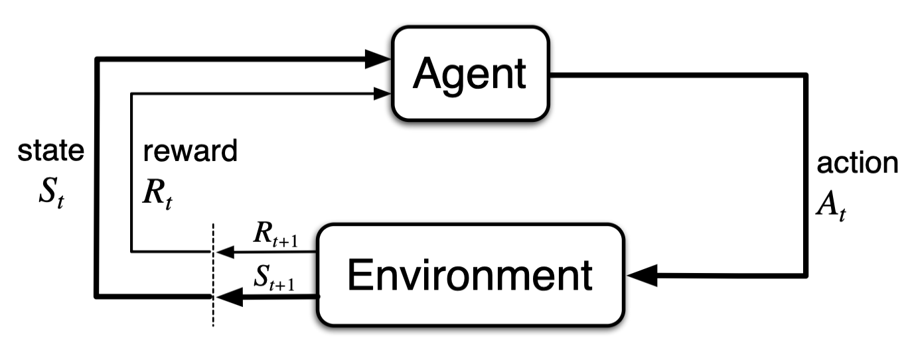

Reinforcement Learning (RL)¶
Reinforcement Learning is a branch of Machine Learning where an agent learns by interacting with an environment to achieve a goal. It’s less about feeding the model labeled data (as in supervised learning) and more about trial, error, and feedback.
RL vs Traditional Machine Learning¶
There are two key differences between Reinforcement Learning (RL) and typical Machine Learning (ML):
- Agent's Action In RL, the agent’s actions affect the data it receives next from the environment. In contrast, ML usually assumes the data is static and independent of it's outputs (predictions).
- Reward Signal RL uses a scalar reward to guide learning- what actions lead to good outcomes through trial and error.
Rewards¶
A reward (denoted as Rₜ) is a scalar signal received after taking an action. It tells the agent how well it’s doing at time step t.
The goal of the agent is to maximize cumulative reward over time, not just perform well in the moment.
The Reward Hypothesis¶
RL is built on the Reward Hypothesis:
“All goals can be described as the maximization of expected cumulative rewards.”
Example (Power Plant Control):
- +1 for producing more power efficiently
- -10 for exceeding safety thresholds
Agent's Actions¶
The agent must choose a sequence of actions to maximize future rewards.
Caveats:
- Immediate rewards might not be the optimal.
- Sometimes, sacrificing short-term gain leads to better long-term outcomes.
History vs. State¶
One of the most common sources of confusion in reinforcement learning is the difference between history and state.
It might seem like the state should just be “everything that happened before” (i.e. the history), but in practice, state is a concise summary of that history—not the entire thing.
What is the History?¶
The history at time step t is the full record of everything the agent has experienced up to that point:
Hₜ = {O₁, A₁, R₁, O₂, A₂, R₂, ..., Oₜ, Aₜ, Rₜ}
This contains:
- All past observations (
O) - All taken actions (
A) - All received rewards (
R)
It’s incredibly detailed—but often too bulky or unnecessary for real-time decision-making.
What is the State?¶
A state Sₜ is a compressed representation of the history that contains all the information the agent needs to decide what to do next.
Sₜ = f(Hₜ)
This function f summarizes the useful parts of history and discards the rest.
A good state captures just enough about the past to make optimal decisions—nothing more, nothing less.
Why This Matters¶
- If you mistakenly treat the history as the state, your system becomes unnecessarily large and computationally expensive.
- Worse, the agent may get distracted by irrelevant past details—leading to poor learning performance.
This brings us to the Markov property, which tells us how to define a state that is truly useful for decision-making.
The Markov Property¶
A state is Markov if it captures everything needed to determine the next step:
P[Sₜ₊₁ | Sₜ] = P[Sₜ₊₁ | S₁, S₂, ..., Sₜ]
“Given the present, the future is independent of the past.”
This means:
- The agent doesn’t need full history.
- A well-designed state simplifies learning and planning.
Example: Rat and Reward Puzzle¶
Let’s say a rat agent presses levers and hears bells and sees lights before receiving cheese (reward). Depending on how we define the state:
| State Design | What the Agent Sees | Pros / Cons |
|---|---|---|
| Last 3 items in sequence | "Bell → Lever → Light" | Small input, fast decisions, might miss context |
| Count of bells/lights/levers so far | "3 bells, 4 lights, 5 levers" | Captures trends, not exact order |
| Full sequence (entire history) | "Bell, Bell, Light, Lever, Bell, Lever, Light..." | Accurate but computationally heavy |
Insight: How you define the state greatly affects learning efficiency.
The One-Step Agent–Environment Loop (based on Sutton & Barto)¶
At the heart of every Reinforcement Learning system lies a continuous interaction loop between the agent and the environment, formalized as a Markov Decision Process (MDP).
Sequence of Interactions:¶
At each discrete time step t, the following happens:
- The agent observes the current state
Sₜ. - Based on
Sₜ, the agent chooses and executes an actionAₜ. - The environment receives the action
Aₜ, responds with: - A new state
Sₜ₊₁ - A reward
Rₜ₊₁ - The agent receives
Rₜ₊₁andSₜ₊₁, then repeats the cycle att+1.
This interaction yields a trajectory like:
S₀, A₀, R₁, S₁, A₁, R₂, S₂, A₂, ...
This diagram, from Sutton & Barto’s book, formalizes the MDP loop:
- The agent produces an action
Aₜ. - The environment receives
Aₜ, and in response: - Emits the next state
Sₜ₊₁ - Emits a reward
Rₜ₊₁

Sutton, R. S., & Barto, A. G. (2018). Reinforcement Learning: An Introduction (2nd ed., in progress). http://incompleteideas.net/book/the-book-2nd.html
Each new state influences future actions, forming a feedback loop. Importantly, this formulation obeys the Markov property—meaning future outcomes depend only on the current state and action, not on the full history.
Major Components of a Reinforcement Learning Agent¶
An RL agent can be thought of as a system that makes decisions by learning from interaction. It may be composed of three core components:
1. Policy – “What should I do?”¶
A policy defines the agent’s behavior: how it chooses actions based on the current state.
- Deterministic Policy: always chooses the same action for a given state.
a = π(s)
- Stochastic Policy: chooses actions according to a probability distribution.
π(a|s) = P[ Aₜ = a | Sₜ = s ]
Used when exploration is important or the environment is noisy.
2. Value Function – “How good is this state?”¶
A value function estimates how much future reward the agent can expect from a given state (or state-action pair).
- Helps the agent choose better states over time.
- Doesn’t directly pick actions, but it influences decisions when paired with a policy.
V(s) = expected cumulative reward from state s onward
3. Model – “What will happen next?”¶
A model is the agent’s internal understanding of how the environment behaves.
- It predicts:
- Next state:
Sₜ₊₁ - Reward:
Rₜ₊₁ - Allows the agent to simulate outcomes before acting.
- Not all RL agents use a model.
Categorizing RL Agents¶
Let’s now organize RL agents by how they combine the components above, and clarify pros, cons, and examples for each category.
1. Value-Based Agents¶
- Uses: Value Function
- Doesn’t explicitly use a Policy (it’s implicit—derived from the value function)
- Doesn’t use a Model
Example:
- Q-Learning estimates the value of state-action pairs (
Q(s,a)) and acts greedily. - SARSA (State-Action-Reward-State-Action): Like Q-learning, but updates values using the actual next action taken.
Pros:
- Simple and widely used.
- Good for discrete action spaces.
Cons:
- Struggles with continuous or high-dimensional actions.
- Doesn’t directly represent policy (requires argmax tricks).
2. Policy-Based Agents¶
- Uses: Policy
- Doesn’t use a Value Function
- Doesn’t use a Model
Example:
- REINFORCE: A basic policy gradient method that updates the policy to maximize expected reward.
Pros:
- Naturally handles continuous action spaces.
- Can learn stochastic or deterministic policies.
Cons:
- Higher variance in updates.
- Often less sample-efficient than value-based methods.
3. Actor-Critic Agents¶
- Uses: Policy
- Uses: Value Function
- Doesn’t use a Model
Example:
-
PPO – Proximal Policy Optimization: Balances learning progress and stability using a clipped objective.
-
A2C – Advantage Actor-Critic: Computes advantage estimates to reduce variance and improve stability.
-
A3C – Asynchronous Advantage Actor-Critic: Runs multiple agents in parallel with independent environments.
-
DDPG – Deep Deterministic Policy Gradient: For continuous action spaces. Actor-critic with deterministic policies.
-
SAC – Soft Actor-Critic: Adds entropy regularization to encourage exploration.
Pros:
- Combines low variance from value-based with direct optimization of policy.
- Very popular for complex environments.
Cons:
- More complex architecture.
- Balancing value and policy updates can be tricky.
4. Model-Free Agents¶
- Uses: Policy and/or Value Function
- Doesn’t use a Model
Examples:
- Q-learning, PPO, DQN, A3C, REINFORCE
Pros:
- Easier to implement and train.
- No need to learn or assume environment dynamics.
Cons:
- Can be sample inefficient—needs lots of interactions.
- Less suitable for planning or simulations.
5. Model-Based Agents¶
- Uses: Model
- May also use: Policy and/or Value Function
Pros:
- Sample efficient—can plan and simulate.
- Useful when real-world data is costly.
Cons:
- Requires learning or designing an accurate model.
- Model errors can lead to bad decisions (model bias).
Two Main Approaches to Develop Reinforcement Learning Agents¶
In reinforcement learning, agents can learn through two broad approaches, depending on how much they know about the environment at the start:
1. Planning (Model-Based Learning)¶
The agent has a model of the environment.
- In this approach, the agent knows in advance how the environment works (i.e., it has a model that describes the dynamics: what happens when it takes an action).
- Instead of learning through direct interaction, the agent simulates outcomes internally using the model.
State → Model → Simulated Next State & Reward → Policy Update
Great for low-risk, fast iteration Not applicable if the environment is unknown or too complex to model accurately
2. Reinforcement Learning (Model-Free Learning)¶
The agent learns everything through direct interaction with the environment.
- The agent doesn't know the rules of the world it lives in.
- It must explore, collect experience, and learn from trial and error.
- This is the most common setup in real-world problems where dynamics are unknown or too complex to define upfront.
State → Real Action → Observation & Reward → Policy Update
More flexible and general Typically requires a lot more data (sample inefficient)
Example 1: Learning to Play Tic-Tac-Toe
| Planning Approach | Reinforcement Learning Approach |
|---|---|
| The agent is given all game rules, and uses search algorithms (like Minimax) to simulate future moves and choose the best one. | The agent plays thousands of games, learns from wins/losses, and gradually discovers winning strategies via trial and error. |
| Efficient learning with a known model | No prior knowledge required |
Example 2: A Robot Learning to Navigate a Warehouse
| Planning Approach | Reinforcement Learning Approach |
|---|---|
| The robot is given a map of the warehouse, and simulates paths to find the most efficient one using A* or Dijkstra’s algorithm. | The robot starts without a map, explores randomly, and learns optimal paths based on feedback (e.g., delivery success, collision penalties). |
| Works well in static and known settings | Adapts to real-world changes like obstacles or delays |
Exploration vs. Exploitation¶
A core challenge in RL is choosing between:
- Exploitation: Use what you already know to get high reward now
- Exploration: Try new actions to potentially discover better rewards later
Balance is key¶
If the agent only exploits, it may miss better strategies. If it only explores, it may never get good at anything.
Real-World Analogies:
| Example | Exploitation | Exploration |
|---|---|---|
| Restaurant Choice | Go to your favorite Italian place | Try a new sushi bar |
| Online Ads | Show top-performing ad | Show a new variation |
| Oil Drilling | Drill where oil was found before | Explore untested land |
| Game Playing | Play the best-known chess move | Try an unconventional strategy |
These examples show how short-term gain vs. long-term learning is a universal tension.
Prediction vs. Control Problems¶
Reinforcement Learning problems fall into two broad types:
1. Prediction Problem:¶
Evaluate how good a policy is.
Task:
Given a fixed policy π, estimate the value function:
V(s) = Expected future reward when starting from state s and following π
Example Use Case:
- You’ve built a robot's policy and want to estimate how good it is.
- You use methods like:
- Monte Carlo Estimation
- Temporal Difference (TD) Learning
2. Control Problem:¶
Find the best policy
Task:
Optimize the policy π to maximize reward.
This is harder because:
- You’re both evaluating and improving the policy.
- The agent must explore, learn value estimates, and update the policy iteratively.
Example Algorithms:
| Method | Solves | Approach |
|---|---|---|
| Q-learning | Control | Value-based: improve policy via Q-values |
| SARSA | Control | Value-based with on-policy updates |
| REINFORCE | Control | Policy-based: improve directly via gradients |
| PPO | Control | Actor-critic: uses both policy + value function |
| Dyna-Q | Control (with model) | Uses planning + learning |
Dynamic Programming (DP) Principles and RL¶
Dynamic Programming (DP) is a powerful method for solving sequential decision problems. It forms the theoretical backbone of many reinforcement learning algorithms.
DP is applicable when the problem has two key properties:
1. Optimal Substructure¶
The solution to the overall problem can be built by combining solutions to its subproblems.
This is the classic "divide and conquer" idea.
Example 1: Shortest Path in a Maze
- To find the shortest path from A to C, you can split the problem:
- First solve from A to B
- Then from B to C
- Combine the results to find the total shortest path from A to C.
2. Overlapping Subproblems¶
Subproblems recur often, so instead of solving them over and over, we cache (store) their solutions for reuse.
Example: Robot Vacuum Cleaning a House
Imagine a robot vacuum learning the shortest cleaning path through a house.
- It must figure out how to go from Room A → Room D.
- But to do that, it repeatedly needs to solve:
- What's the best way from Room A → Room B?
- And from Room B → Room C?
- And so on…
Since these room-to-room paths are shared across many larger routes, the same subpaths appear over and over.
Once the robot has figured out how to go from Room A to B efficiently, it can store that result and reuse it whenever any larger route requires it.
This makes the learning process faster and more efficient, just like memoization in classic dynamic programming.
Why DP is Relevant to RL?¶
Markov Decision Processes (MDPs) - the foundation of RL - satisfy both:
- Optimal Substructure
- Overlapping Subproblems
Thus, we can use DP to solve RL problems (when the model is known).
Bellman Equations – The Heart of RL¶
These equations give RL its recursive structure. They define how value functions can be broken down into immediate reward plus future value.
Bellman Expectation Equation (for a given policy π)¶
Vπ(s) = E[ Rₜ₊₁ + γ * Vπ(Sₜ₊₁) | Sₜ = s ]
Interpretation:
The value of being in state
s(under policy π) = the expected reward right now plus the discounted value of where you’ll land next, if you keep following π.
It answers:
“If I follow this policy, how much reward can I expect to accumulate starting from this state?”
Real-World Analogy:
You're using Google Maps to follow a predefined route to a destination.
Rₜ₊₁= how enjoyable or efficient your next road segment is (traffic, views, fuel efficiency)Vπ(Sₜ₊₁)= how promising the rest of the trip looks from the next junctionγ= how far you care about future road conditions (e.g., close trip vs. cross-country)
So the value of your current location = how good the next step is + how good things look after that.
Bellman Optimality Equation¶
V*(s) = maxₐ E[ Rₜ₊₁ + γ * V*(Sₜ₊₁) | Sₜ = s, Aₜ = a ]
Interpretation:
The optimal value of a state is the maximum expected return achievable by choosing the best action now, assuming we act optimally from that point on.
It tells us how to compute V*(s) by evaluating all possible actions and choosing the best.
Real-World Analogy:
You're now choosing your own route on Google Maps, not following a fixed one.
- You consider all exits from the roundabout.
- For each one, you calculate:
- “What’s the reward from taking this exit?”
- “How good are things from there on?”
Then, you choose the best path.
Summary¶
| Equation | Purpose | Intuition |
|---|---|---|
| Bellman Expectation | Evaluate a given policy π | “What happens if I follow the instructions?” |
| Bellman Optimality | Find the best policy | “What’s the smartest action I can take now?” |
Planning approach by using Dynamic Programming¶
Because DP assumes full knowledge of the MDP - i.e., transition probabilities P, rewards R, and state/action sets - it’s used primarily for planning (Model-Based Learning).
DP is used for:¶
Prediction (Policy Evaluation):¶
- Input: MDP ⟨S, A, P, R, γ⟩ and policy π
- Output: Value function
Vπ(s)
Control (Policy Optimization):¶
- Input: MDP ⟨S, A, P, R, γ⟩
- Output: Optimal value function
V*, and optimal policyπ*
Which RL Agent Categories Use DP?¶
Here’s how DP relates to the RL agent categories you explored earlier:
| Agent Type | Uses DP? | How? |
|---|---|---|
| Value-Based | Yes | Uses Bellman backups to compute value functions (e.g., via Q-learning) |
| Policy-Based | No | Optimizes policies directly without relying on value recursion |
| Actor-Critic | Partially | Critic uses value estimates based on Bellman updates (TD, advantage) |
| Model-Free | Indirectly | Value updates follow Bellman logic, but with sampled experience only |
| Model-Based | Fully | Can use DP-style backups by simulating transitions from the model |
Policy-Based Algorithms¶
Policy-based methods:
- Don’t use value functions explicitly (though they sometimes do, like in actor-critic).
- Don’t perform backups or rely on recursive decomposition via the Bellman equation.
- Instead, they treat the policy itself as the thing to optimize.
Why You Can't Use DP with Pure Policy-Based Algorithms¶
Dynamic Programming works by recursively estimating values of states or actions. But in policy gradient methods, the policy is parameterized (e.g., with a neural network), and we directly adjust the parameters to maximize expected return—not via value recursion.
So:
| DP-based methods | Policy-based methods | |
|---|---|---|
| What is updated? | V(s) or Q(s,a) using Bellman equations |
π(a) |
| What is needed? | Full model (P, R) |
No model needed (can use sampled rewards) |
| Algorithm type | Planning | Optimization via stochastic gradient ascent |
| Backup type | Recursive | Sample-based Monte Carlo or TD estimates |
So What Do We Use Instead of DP?¶
Policy-based algorithms use gradient-based optimization, not Bellman backups.
There are two major categories:
1. Monte Carlo Policy Gradient¶
- Estimate total return from sampled episodes.
- Use this to compute the gradient of the expected return w.r.t. the policy parameters θ.
Classic example: REINFORCE
θ ← θ + α * ∇θ log πθ(a|s) * Gₜ
Where:
Gₜis the return from timetonward.∇θ log πθ(a|s)is the gradient of the log-policy.
Doesn't require value function or model High variance in gradient estimates
2. Actor-Critic Methods¶
Hybrid methods where:
- The actor is the policy being optimized.
- The critic estimates a value function (usually via TD learning) to reduce variance.
Examples:
- A2C (Advantage Actor-Critic)
- PPO (Proximal Policy Optimization)
- DDPG, SAC
Here, the critic may use Bellman-style updates, but the policy update is still gradient-based, not DP.